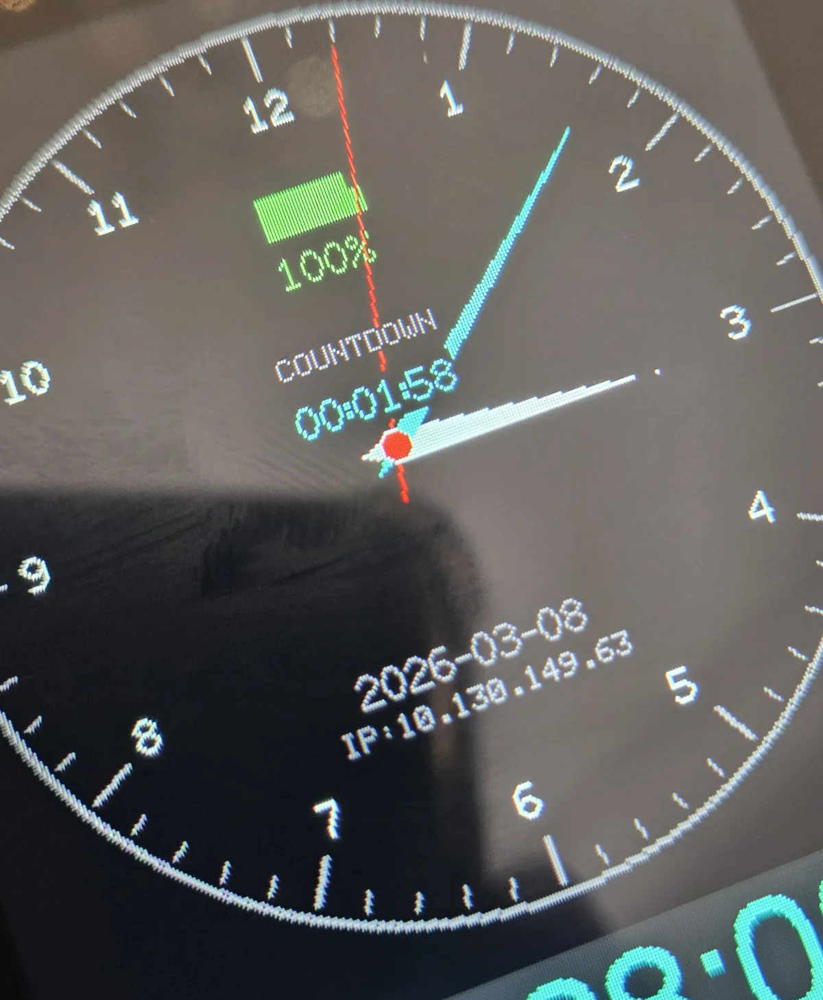

Complete custom smartwatch firmware for a US client — analog and digital watch faces, audio playback, photo display, countdown timers, and full Wi-Fi remote control — evolved across four hardware generations in an ongoing collaboration that began in 2023.

What started as firmware for a single Wi-Fi-controlled watch has grown into a smartwatch platform spanning four display generations — from a 1.69" touch LCD through 1.75" and 2.06" AMOLED rounds to a 3.5" panel — with one firmware architecture carried and adapted across all of them.
The watch renders analog and digital faces with live battery state, countdown timers, and network status; plays audio through a dedicated driver; displays user photos; and is fully controllable over Wi-Fi — a built-in web page and REST API handle photo uploads, clock sync, and settings from any browser, with no app required.
The collaboration has continued for over two years and is still active — the strongest endorsement a client can give.
★★★★★"Tehsin is great to work with and is a very skilled engineer. I look forward to continuing to work with him in the future."